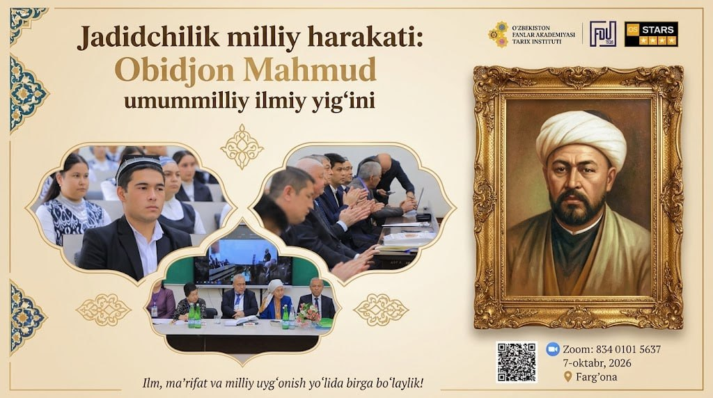
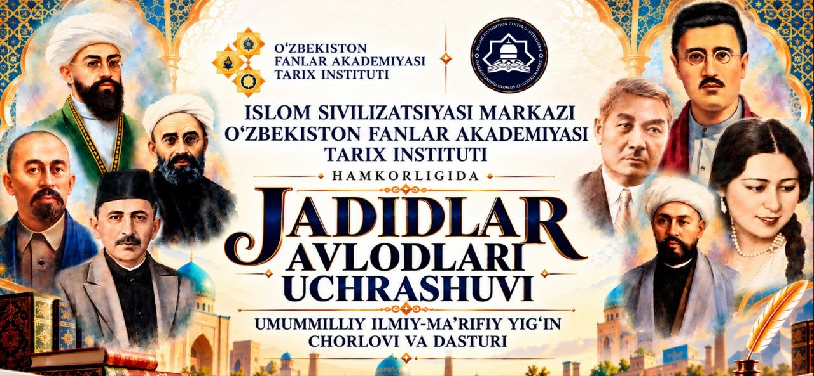
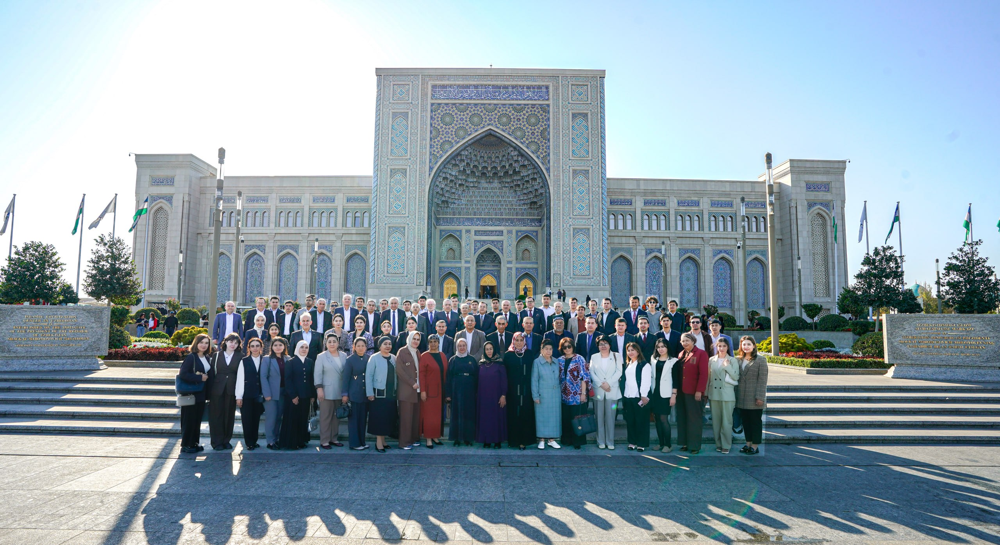
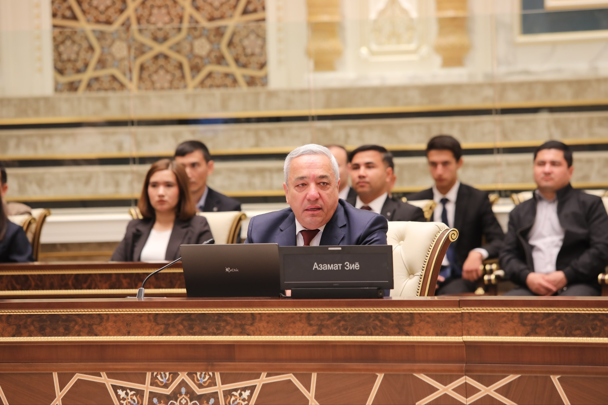

Toshkent, 1918«Turan» teatr truppasi a'zolari
Abdulla Avloniy, Munavvarqori va birinchi o'zbek teatr aktyorlarining Toshkentdagi Kolizey teatri oldida olingan jamoaviy surati.
 Boku, 1926
Boku, 1926
I Turkologiya qurultoyi delegatlari
O'zbekiston, Ozarbayjon, Turkiya va Qrim delegatlarining Boku saroyidagi tarixiy yig'ilishi fotosurati. Fitrat o'rtada.

Berlin, 1923Germaniyada ta'lim olayotgan Turkiston yoshlari
Gumboldt va boshqa nufuzli Germaniya universitetlarida kimyo, konchilik, qishloq xo'jaligi bo'yicha tahsil olgan o'zbek talabalari.

Fitrat va Samarqand ziyolilari (1918)
Tarixiy fotosurat • Samarqand
Abdurauf Fitratning Samarqand ma'rifatparvarlari bilan birgalikda tushgan noyob fotosurati.

Avloniy yangi usul maktabi o'quvchilari bilan (1914)
Tarixiy fotosurat • Toshkent
Abdulla Avloniy ochgan maktab o'quvchilari va muallimlarning dastlabki guruh surati.

Turkiston musulmonlari syezdi delegatlari (1917)
Tarixiy fotosurat • Qo'qon
Turkiston Muxtoriyati e'lon qilingan kunlarda majlis qatnashchilari tushgan tarixiy surat.